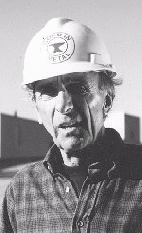

Contents | Features | Reviews | News | Archives | Store |
 |
|
| Movie Credits | Buy It! |
Dadetown
Review by Eddie Cockrell
|  | Directed by Russ Hexter Starring Bill Garrison, |
Turn on the TV, find an all-news channel, and watch it for a few minutes. How do you know what you're seeing really happened the way you're seeing it? That it happened at all? At some point in his too-short life, filmmaker Russ Hexter, who died of an aortic aneurysm in April of this year at the age of 27, began thinking this way about news footage and, more specifically, documentary films. Working under the aegis of Big Ol' Productions, the commercial house he formed with a group of New York University buddies, Hexter settled on a concept at once brilliantly heretical and frighteningly pertinent: a feature-length documentary on a hot-button American contemporary sociopolitical issue to be made up out of thin air. Completely fake. The locations an amalgam of upstate New York villages, the subjects a mix of interested locals and regional stage professionals. And thus was Dadetown born.
"Small towns have little problems too," understates a citizen midway through this extraordinary meta-documentary in which an idyllic community in upstate New York must adjust and adapt to an influx of young urban professionals and the tensions raised when the high-tech API (American Peripheral Imaging) company quietly opens a complex on the outskirts of town at the same time local employer Gorman Metal (airplanes during World War II, paper clips and staples now) goes into a financial tailspin. A PBS camera crew assigned to film a short profile of the simple town becomes swept up in a vortex of emotion and suspicion when daily life in the traditional community takes an ugly and violent turn that given the social and economic forces at work is perhaps inevitable.
The film is a construction that not only comments on the documentary form but expands upon it as well. "I've always believed that Dadetown could not have been made any other way without doing damage to the holistic story, which tries to address the identity crisis among small towns in America," says director and co-scenarist Russ Hexter of his feature film debut. "I'll admit the film was somewhat of an experiment to see just how far we could go... With a documentary, there is a much deeper connection to the events on the screen...and with Dadetown we tried to temporarily lift that veil... If you can't experiment with your first feature, then what?"
Which leads naturally to the question, why would a filmmaker want to run the risk of violating an audience's trust in the veracity of the material? Although Hexter didn't live long enough to speak in great detail about his achievement, his family and friends are confident they have the answers and said so to the New York Times: "He loved the idea that it could fool people," remembers his mother, 58-year-old Maren Hexter. "Russ loved every character in this movie," said producer Jim Carden. "He didn't try to make the townspeople look like idiots. He didn't try to make the API people look like idiots. He just wanted to state a case, without judging either side."
The effect of this meta-documentary on the festival circuit was instantaneous. Audiences in Vancouver, where the film had its premiere, were thunderstruck to see a cast list in the closing credit crawl. One woman, jumped up during the post-screening question-and-answer session, proclaiming "I think you're going to do great in Hollywood because you're a liar and a cheat." And some critics and festival programmers around the country were fooled into believing that Dadetown was real. In the months before his death, Hexter also sent the film to the Boston and Sundance festivals.
In fact, those concerned by the increasingly blurred line between fact and fiction in American media owe it to themselves to see this extraordinary accomplishment. Russ Hexter believed that fooling the public forced them to confront the issue of how easy it to be fooled by "authentic"-looking footage and said so to this reviewer in a series of telephone conversations shortly before his death. When urged to agree to a film festival note leaking the film's secret, Hexter laughed then pulled up short. "I'll have to think about that one." Twenty four hours later he agreed, but with a tangible lack of enthusiasm. For him, the instructional value inherent in the shock of deception far outweighed the dog-and-pony show label.
This astonishing debut doesn't grab and hold right away, but give it time: subversive and insidious, the cumulative effect is devastating. Other films have dealt with these questions in both documentary (David Holzman's Diary, Roger and Me) and dramatic (Capricorn One) form. As word of the small town that succumbs to its "little problems" spreads among those who take their movies seriously, Dadetown will mark an important turning point in American moviemaking. Tragically, Hexter isn't around to see the ripples his work has caused. And, no doubt, he'd be happy that a lot of people who see Dadetown have trouble watching television news in quite the same way.
Contents | Features | Reviews | News | Archives | Store
Copyright © 1999 by Nitrate Productions, Inc. All Rights Reserved.